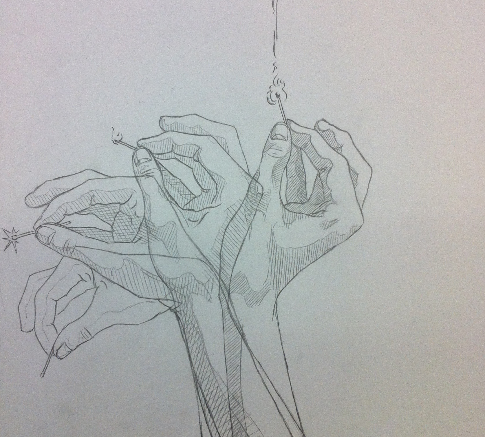

*
PORTFOLIO
Motzige Lady
Acryl auf Karton
Januar 2017
Selbstportrait nach Egon Schiele
Bleistift, Fineliner und Aquarell auf Packpapier
Februar 2016
Schädelstudien
Bleistift und Kohle auf Papier
März 2016
Schädelstudien II
Bleistift, Farbstift und Acryl auf Papier
März 2016
Parasiten
Bleistift und Aquarell auf Papier
Januar 2016
Miezen
Bleistift und Filzstifte auf Papier
Januar 2016
Floating Limbs
Fineliner und Filzstifte auf Papier
Januar 2016

It's a match
Bleistift auf Papier
Februar 2016